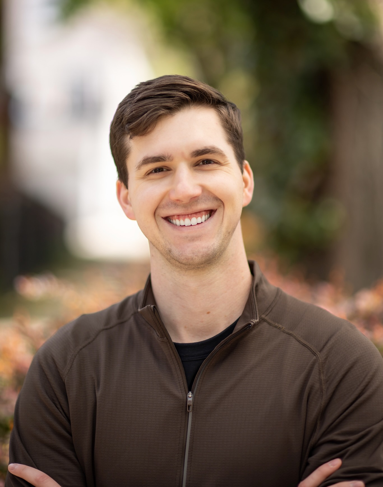

I'm Dr. Kevin Hershberger, a Physical Therapist practicing in Chicago, Illinois.
I received my Bachelor of Science in Health Science from the University of Wisconsin-Parkside in 2020, where I was also a member of the golf team from 2016 to 2020. I completed my Doctorate in Physical Therapy from Rosalind Franklin University in 2022 and am currently a Fellow of the American Academy of Orthopedic Manual Physical Therapy (FAAOMPT) through training with the Manual Therapy Institute.
My path into physical therapy started with a significant low-back injury during my collegiate golf career that sidelined me for over a year. Going through rehabilitation — understanding the anatomy, biomechanics, and the "why" behind recovery — changed everything for me. Today, I play pain-free golf, lift weights, run, and compete in beach volleyball because of what I learned during that process.
That experience taught me that most injuries aren't random. They're usually the result of movement patterns, training errors, or weaknesses we can identify and fix. My goal is to help you understand the root causes behind your pain so you can stay active for life.
I specialize in treating orthopedic and sports injuries for active professionals who want to stay strong and mobile for years to come. I focus on helping people move better, train smarter, and avoid the injuries that derail their progress.
I believe in evidence-based care without the BS. No fear-mongering, no quick fixes, no generic advice. Just practical solutions rooted in understanding how your body actually works.
When I'm not treating patients, I'm staying active myself — lifting, running, cycling, golfing, and playing beach volleyball. I'm also into wine, travel, and books. I share PT insights and personal content on Instagram and through my weekly newsletter, where I break down real patient cases and give practical strategies you can use right away.